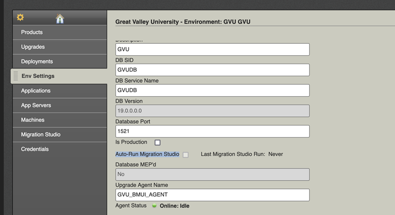

Modernization Studio
Ellucian Modernization Studio Scanner is an innovative platform designed to assist higher education institutions in evaluating legacy Enterprise Resource Planning (ERP) systems, databases, solutions, and connected third-party integrations. It supports a seamless transition to modern ERP Software as a Service (SaaS) platforms, such Ellucian Student powered by Banner SaaS and the Ellucian Experience platform.
Modernization Studio platform provides a structured, efficient, and automated approach, leveraging real-time technology to address the complexities of data migration, transformation, integrations, and business operations. Modernization Studio scanners MSS simplifies the process of identifying custom and modified objects within an ERP environment by comparing your objects to corresponding versions of Banner baseline objects. It also queries databases to extract configuration data and statistics.
Key Tools
- Comparison Tooling: Compares your objects with Banner baseline objects to identify differences in code and schemas.
- Database Query Utility: Retrieves configuration data and statistics to assess the size and complexity of your database.
By aligning with Ellucian's Customer Architecture Reference Model (CARM), Modernization Studio supports institutions in transitioning from legacy on-premises systems to Ellucian Software as a Service (SaaS). Its consolidated features empower organizations to modernize legacy systems, reduce risks, streamline migrations, and make informed decisions throughout the process.
Support Services
The Ellucian Action Line team supports the execution of the Modernization Studio Scanner. However, they do not provide analysis or interpret results to explain why objects are flagged as different. To request assistance with running MSS, submit a ServiceNow ticket/case in the Ellucian Customer Center.
Institutions can leverage MSS output to conduct self-assessments or engage in pre-sales discovery if interested to discuss their move to SaaS with an Ellucian Sales Account Executive.
If you require a deeper understanding or more detailed insights, we encourage you to reach out to your Ellucian Sales Account Executive or Customer Success Manager (CSM) for consultation. They would assist in scheduling a thorough analysis with an Ellucian team member to help you interpret the data and information, and offer recommendations tailored to your specific institutions’ needs.
Overview
The following outlines the process for performing MSS scans.
Modernization Studio Scanner (MSS) are to be deployed within the Banner Enterprise Resource Planning (ERP) platform, specifically on Banner job submission JobSub server. These scanners are designed to comprehensively analyze various components of the system. They connect to Banner and Operational Data Store or Cognos databases to uncover critical details about Banner schemas, objects, and reports.
Additionally, they delve into the underlying file structures within the Banner environment and identify cron command-line utility “cron job” scheduler configured on the JobSub server, ensuring a thorough understanding of the environment’s configuration and operations. When the scanner is executed with all available scans enabled, it performs a detailed analysis of multiple areas.
These scanning tools collect metadata from on-premise Banner environments to support customers in planning their migration to Ellucian SaaS. They gather information such as database structures, packages, rule and validation configuration files, identifiable scheduled jobs, and report metadata. Importantly, they do not collect institutional data or any Personally Identifiable Information (PII). Our primary goal is to gain a comprehensive understanding of your Banner ecosystem to provide informed modernization recommendations. This includes identifying custom code, integrations, scheduled jobs, reports, and opportunities to align with Ellucian's prescriptive templating.
For each scan, a compressed ZIP file is created in the designated output folder, summarizing the findings.
Below are the scans performed by MSS and their respective purposes:
- Banner Database (banner db) Scan:
This scan connects to the Banner database to discover information about the objects stored within it, such as tables, views, stored procedures, and relationships. It provides a detailed inventory of the database structure and content relevant to Banner.
- Banner Operational Data Store (ODS) Scan:
This scan focuses on the Operational Data Store (ODS), analyzing its structure and configuration. It extracts details about how data flows between Banner and ODS, providing insights into integration and reporting.
- IBM Cognos Analytics (Cognos) Scan:
The scanner examines Cognos reports and their configurations. It identifies report metadata, dependencies, and connections to the Banner or ODS databases, offering a comprehensive view of reporting mechanisms.
- Automic Automation (Automic) Scan:
Allow users to analyze and examine the output of automated jobs or processes, by searching through log files or generated reports, to verify if a task was completed successfully. It acts as a quality check for automated workflows.
- Database Extensibility:
This scan retrieves information about database extensions from Supplemental Data Engine (SDE) tables.
- Application Extensibility:
Collect information about custom pages and custom RESTful services created by customers using the Self-Service Page Builder.
- File System Scan:
The scanner explores the file system within the Banner directories on the JobSub server. It catalogs configuration files, scripts, logs, and other relevant files stored within these directories.
- Cron Jobs:
This scan identifies all cron jobs set up on the JobSub server. It provides details about scheduled tasks, their execution schedules, and associated scripts, ensuring visibility into automated processes.
Requirements and Considerations
Understand the environment requirements and setup steps before you run Modernization Studio Scanner.
Ellucian Solution Manager (ESM)
ESM 23.2 or higher is required. You must have the latest version of ESM installed to run the latest version of Modernization Studio Scanner.
Run in isolation
Modernization Studio Scanner must be run in isolation. If running other Banner upgrades on the same day, you must wait until they have completed before starting Modernization Studio Scanner.
Java 1.8 and above
Modernization Studio Scanner is a set of self-contained Java executables is not dependent on installations of any other software, aside from Java Runtime Environment 1.8 or above.
Port 443
Port 443 must be open for outbound to the internet from your JobSub server to run Modernization Studio Scanner through ESM. Port 443 should not be open for inbound network traffic. If you cannot open Port 443 for outbound access, or if the complex firewall rules prohibit you from using Port 443, see Option 1: Download and Manually Run MSS on Environments.
CentOS/Red Hat 7 and above
Ellucian does not support Red Hat Enterprise Linux 6, Solaris, HP-UX, and AIX.
Clean up $BANNER_HOME (Linux only)
Your $BANNER_Home directory should be cleaned up before running the Modernization Studio Scanner. This will shorten run time and lessen the likelihood of false positives being reported from the files in your $BANNER_HOME directory.
Additional information
The Modernization Studio Scanner runs on your job submission server from Ellucian Solution Manager (ESM). Ellucian continues to enhance and improve the discovery capabilities of Modernization Studio Scanner. Product enhancements will be published when the updated versions of tooling improvements are released.
As a reminder, it is helpful to track access in Banner to your jobsub jobs, so the last run date for each job is recorded. If the last run date is recorded, it can be reported in the Database Query Utility output.
Auto-Run Modernization Studio Scanner (Opt-in/Opt-Out)
Automatically selected for any environment that has the Is Production field selected.

- It has been 30 days or more from the date that is displayed in the Last Blueprint Run field
- The Last Blueprint Run field displays Never (the default when you first upgrade to Solution Manager 24.1)Tip: You can clear the check box if you want to disable the Solution Manager feature to automatically add Blueprint Utilities to your upgrade job.
For more information, see Define Banner environment details.
Option 1: Download and Manually Run MSS on Environments
Follow this procedure to manually run Modernization Studio Scanner (MSS) on your environments.
About this task
Procedure
Option 2: Use ESM to Run MSS for Each Environment (Beta Customers Only)
Compare your environment to Banner baseline to report potential customizations.
Use ESM to run MSS for each environment
Review and acknowledge each section listed by clicking the checkboxes to launch the Modernization Studio Scanner and Blueprint Utilities.
- The Info section highlights the functionality of the Modernization Studio Scanner and provides important information about running MSS.
- The Blueprint section allows you to run two utilities: the Database Query Utility and the Banner Environment Comparison Tool.
Field(s) in this section
Field Description Choose which tool you want to run Prompts you to select the tool to launch. - The Email section is required for Modernization Studio Scanner.
Field(s) in this section
Field Description Enter the Email Address Prompts you to enter the email address of the person to contact in case Ellucian has any questions. - The Cron section enables a cron job scan for Modernization Studio Scanner. In this section, you are required to enter the root user or a user with access to cron jobs across all users on the JobSub server. If the Banner Install User has permission to read all cron job information, leave the username and password values as 'N/A' and retain the default value for the prompt.
Field(s) in this section
Field Description Please enter the user ID that has access to read all cron job information Prompts you to enter the user who has access to cron jobs across all users on the JobSub server. Enter the password for the user mentioned above Prompts you to enter the password for the user entered above. Enter the prompt for the user mentioned above Prompts you to configure the prompt when SSH'ing or using suto switch to the user entered above. - The JobSub section enables the scan for files scan on the JobSub server. It scans various folders under $BANNER_HOME, and folders listed in the provided field where your mods are stored.
Field(s) in this section
Field Description Enter a comma-separated list of folders Prompts for folders where you store your customized Banner source files. If you don’t have any customized sources, please retain the default value (N/A). - The Banner section enables the scan for Banner database.
Field(s) in this section
Field Description Enter the IP address of the Banner database server Prompts you to enter the IP address of the Banner database server. Enter the port number of the Banner database Prompts you to enter the port number for the Banner database. Enter the service name of the Banner database Prompts you to enter the service name for the Banner database. - The ODS section enables the scan for ODS database.
Field(s) in this section
Field Description Is an ODS server configured in your environment? If you have a ODS server provisioned for your environment, select Yes from the list. Enter the IP address of the ODS server Prompts you to enter the IP address of the ODS database server. Enter the port number of the ODS database Prompts you to enter the port number for the ODS database. Enter the service name of the ODS database Prompts you to enter the service name for the ODS database. Enter the username to connect to the ODS database Prompts you to enter a user to connect to the database. Use either SYSTEM user or create a new user with the privileges outlined in Resources.
Enter the password for the username above Prompts you to enter the password for the user entered above. - The Cognos section enables the scan for Cognos database.
Field(s) in this section
Field Description Is an IBM Cognos server configured in your environment If you have a Cognos server provisioned for your environment, select Yes from the list. Enter the IP address of the IBM Cognos server
Prompts you to enter the IP address of the Cognos database server. Enter the port number of the IBM Cognos database Prompts you to enter the port number for the Cognos database. Enter the service name of the IBM Cognos database Prompts you to enter the service name for the Cognos database. Enter the username to connect to the IBM Cognos database
Prompts you to enter a user to connect to the database. Use either SYSTEM user or create a new user with the privileges outlined in Resources. Enter the password for the username above Prompts you to enter the password for the user entered above. Enter the schema name where all the Cognos metadata tables are located Prompts you to enter the schema name, where Cognos metadata tables are installed. Note: Use the SQL query found in Resources to find the schema name. - The Audit section enables the scan for AUDIT schema installed as part of Cognos database.
Field(s) in this section
Field Description Is an IBM Cognos server configured in your environment If you have a Cognos server provisioned for your environment and AUDIT schema enabled, select Yes from the list. Enter the IP address of the IBM Cognos server
Prompts you to enter the IP address of the Cognos database server. Enter the port number of the IBM Cognos database Prompts you to enter the port number for the Cognos database. Enter the service name of the IBM Cognos database Prompts you to enter the service name for the Cognos database. Enter the username to connect to the IBM Cognos database
Prompts you to enter a user to connect to the database. Use either SYSTEM user or create a new user with the privileges outlined in Resources.
Enter the password for the username above Prompts you to enter the password for the user entered above. Enter the schema name where all the Cognos metadata tables are located Prompts you to enter the schema name, where Cognos AUDIT metadata tables are installed. Note: Use the SQL query found in Resources to find the schema name. - The Automic section enables the scan for Automic jobs.
Field(s) in this section
Field Description Is an Automic server configured in your environment? If you have an Automic server provisioned for your environment, please select Yes from the list. Enter the IP address of the Automic server
Prompts you to enter the IP address of the Automic database server. Enter the port number of the Automic database Prompts you to enter the port number for the Automic database. Enter the service name of the Automic database Prompts you to enter the service name for the Automic database. Enter the username to connect to the Automic database
Prompts you to enter a user to connect to the database. Use either SYSTEM user or create a new user with the privileges outlined in the section below. Enter the password for the username above Prompts you to enter the password for the user entered above. Enter the schema name where all the Automic metadata tables are located Prompts you to enter the schema name, where Automic jobs metadata tables are installed. Note: Use the SQL query found in Resources to find the schema name.
Output
After the scan is completed, the scanner will generate raw output results based on the configuration of Ellucian Solution Manager (ESM). These results will be uploaded to a secure Amazon Simple Storage Service (S3) bucket within the Ellucian AWS account.
For customers who did not use ESM and ran scans manually, they will be will be directed to the output folder specified in the targetPath attribute, which in this case is resultCli.
- Databases-v.v.vv-xxxx.PROD-yyyymmdd-nnnn.zip
- Databases-v.v.vv-ODS-xxxx.ODSPROD-yyyymmdd-nnnn.zip
- Cognos_Reports-v.v.vv-Cognos_Reports-yyyymmdd-nnnn.zip
- Extensibility-v.v.vv-EX-xxxx.PROD-yyyymmdd-nnnn.zip
- Applications-v.v.vv-DB_APP-xxxx.PROD-yyyymmdd-nnnn.zip
- Applications-v.v.vv-WAR_APP-xxxx.PROD-yyyymmdd-nnnn.zip
- Applications-v.v.vv-SSB8-xxxx.PROD-yyyymmdd-nnnn.zip
- Jobs-v.v.vv-AJ-xxxx.UC4P-yyyymmdd-nnnn.zip
- Jobs-v.v.vv-CJ-xxxx-JOBSUB-yyyymmdd-nnnn.zip
- Jobs-v.v.vv-DB_JOBS-xxxx.PROD-yyyymmdd-nnnn.zip
- Customer_Information-v.v.vv-CI-xxxx.PROD-yyyymmdd-nnnn.zip
- Customer_configurations-v.v.vv-xxxx.PROD-yyyymmdd-nnnn.zip
- Files-v.v.vv-xxxx-JOBSUB-yyyymmdd-nnnn.zip
- Log-yyyymmdd-nnnn.zip
- Summary-yyyymmdd-nnnn.txt
- scanners-cli.log
- scanners-toolkit.log
Save all output results in a single file and convert it into a ZIP (Zipped Information Package) file. Name the ZIP file using the format: MSS-<Institution-Name>-<YYYYMMDD>.zip. For example, MSS-Eloyce-University-20250219.zip.
When ready, upload your ZIP file to this Ellucian secure Box.
resultCli and resultCliCron, and all log files from the db-scan and cron-scan folders.If you require a deeper understanding or more detailed insights, we encourage you to reach out to your Ellucian Customer Success Manager or Sales Account Executive for consultation. They would assist in scheduling a thorough analysis with an Ellucian team member to help you interpret the data and information, and offer recommendations tailored to your specific institutions’ needs.
Resources
These resources can be used as a reference for Modernization Studio Scanner.
| Question | Answer |
|---|---|
| How to find the Cognos schema that hosts all the metadata tables? | Execute the following: |
| How to find the audit schema that hosts all the metadata tables? | Execute the following: |
| How to find Automic schema that hosts all the metadata tables? | Execute the following: |
| How to create a new user to connect to the database? |
|
Tool Help
If you encounter any difficulties or issues while running Modernization Studio Scanner (MSS), Ellucian recommends creating a support case through the Ellucian Customer Center.
This will ensure that our Ellucian Action Line support team can promptly assist you with troubleshooting and resolve the problem. Providing detailed information about the issue, such as error messages and specific steps executed, will help expedite the resolution process. Our team is committed to helping you address any challenges to ensure smooth and effective use of the MSS scanners.